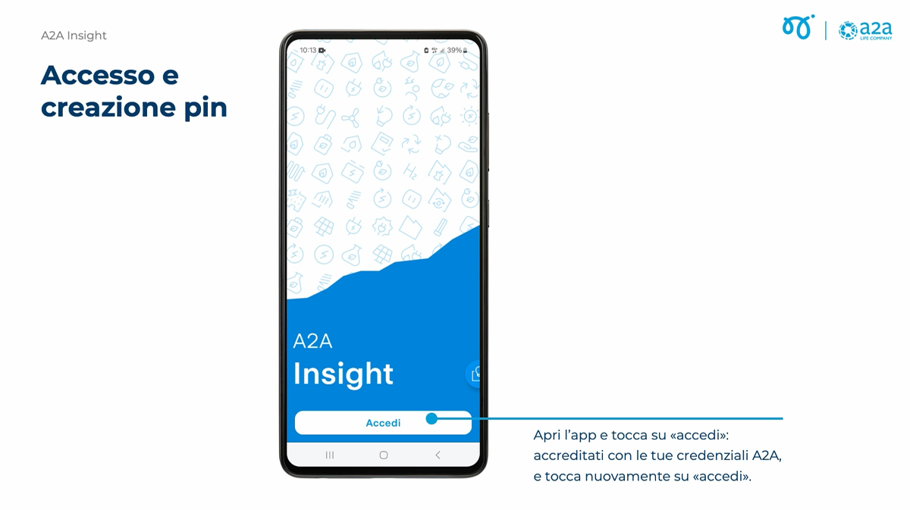

FTV Monitoring: the mobile app
A scoped-down mobile experience for clients and maintenance technicians, designed alongside the FTV Monitoring web platform so both share the same profiling logic and data model. Shipped and live.

Why a separate mobile experience
The brief called for more than a web dashboard, the client specifically wanted an app that shows widgets with alerts, so plant status could be checked on the go, not just from a desk. Rather than shrink the entire web Control Room onto a phone screen, the app was scoped from the start around the two audiences who'd realistically use it in the field, clients and maintenance technicians.
Admin and Backoffice users manage the full plant estate and need the detail of the web platform, so that workflow stays on desktop. The mobile app exists for people who need a fast, secure check-in, not a full control room in their pocket.
Design decisions
PIN-based access, not a full login form
The screen shown above is the app's access flow. After installing, the user authenticates once with their company credentials, then unlocks the app on return visits with a short PIN, quicker for a technician checking an alert between site visits than re-entering full credentials every time.
Same profiling, smaller surface
The app reuses the web platform's four-tier profiling, Admin, Backoffice, Manutentore and Cliente, so permissions stay consistent across devices, but only exposes the subset of screens relevant to Cliente and Manutentore: plant overview, real-time KPIs, alarms and document access, deferring anything administrative to desktop.
Outcome
The app is complete and live alongside the web platform.